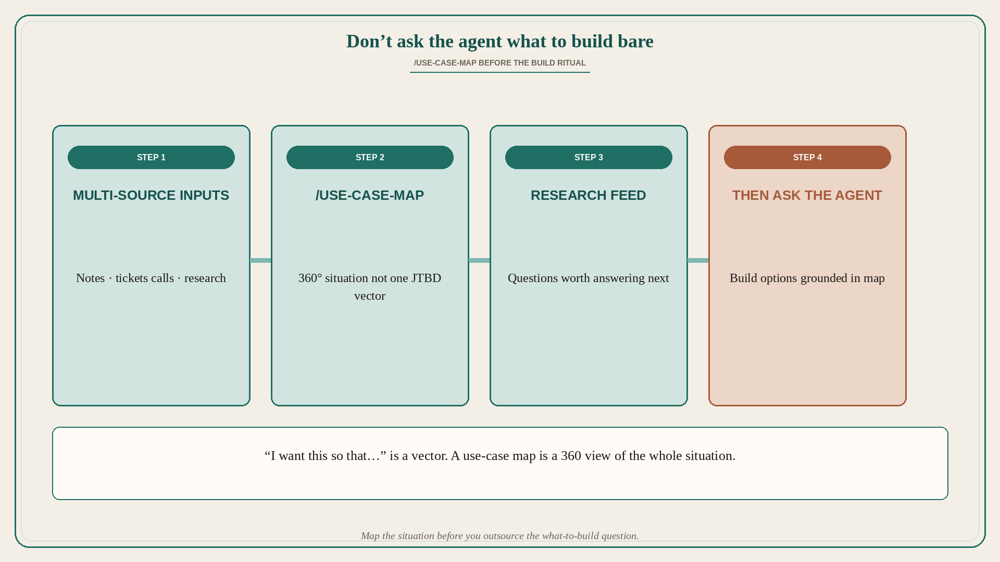

Don’t ask the agent what to build without a use-case map
Source: George / prodmgmt.world (@nurijanian)
original post
What it claims
Product now has a ritual: “ask the agent what to build.” To avoid BS, add /use-case-map for multi-source inputs. It is not just a vector (“I want this so that…”) but a 360° view of the whole situation — and it feeds research as well as build prompts.
Why it matters for a PO
POs already juggle tickets, call notes, stakeholder dumps, and research scraps. Dumping that pile into an agent and asking “what should we build?” produces confident feature lists with no situational grounding. A use-case map forces synthesis before generation: who, context, constraints, outcomes, edges — so backlog candidates and discovery questions come from the situation, not from the model’s prior.
3 takeaways
- “Ask the agent what to build” without a map invites fluent BS.
- Use-case map = 360° situation from multiple sources, not a single JTBD sentence.
- The same map is research input — it surfaces what you still need to learn.
Practice this week
Before the next “what should we build?” prompt (human workshop or AI), spend 30 minutes on a /use-case-map: paste 3+ sources (ticket cluster, call notes, research snippet), list actors, triggers, constraints, success/failure, and open unknowns. Only then ask for build options — and require each option to cite which map cell it addresses.